News
January 12, 2019: Tailgunner in JavaScript by Static Binary Translation
Fifteen years after a very nice little Java project, I now repeated the same exercise in JavaScript. It is an exact port of the 40 year old classic arcade game "Tailgunner", which I did together with Graham Toal.
Tailgunner is a vector game programmed by Dan Sunday of the company Vectorbeam in 1979. Vectorbeam and
the game were sold to Cinematronics later. Tailgunner was very advanced for its time and is probably
the first 3D vector game (older than Atari's Battlezone). This exact reproduction of the game was not
achieved by a conventional CPU emulator, but by so-called static binary translation. Back in 2004,
Graham Toal wrote a really cool program, with which he automatically
translated the original game code from its specific CPU's machine language to C. With Graham's help I ported his generated
C code first to Java, and now to JavaScript, and added a graphical HTML5/JavaScript environment in order to make
the game playable in web browsers.
Click here to try out Tailgunner now.
This is a screenshot to give you an impression of the game:
January 1, 2019: Flashx20, the Epson HX-20 Floppy and Screen Emulator, now with Big Files
I fixed a disk I/O bug in flashx20, my little program to simulate external floppy disk drives and an external display controller for the Epson HX-20 handheld computer.You can now from the HX-20 create and access files on the PC's hard disk of up to 8 Mbytes. The files are usable in random access mode using Disk Basic or machine language. You can directly access records of 128 bytes within such files by specifing their number (1-32767) in the GET or PUT command.
The new version can be downloaded as a zip file with examples and documentation here:
Here is an example in Epson Disk Basic showing the file access capabilities with an 8 Mbyte file to give you an impression (also in the zip archive, to be loaded with LOAD "C:FILE8MB.ASC"):
10 REM ************** 20 REM Files with 8MB 30 REM January 2019 40 REM Norbert Kehrer 50 REM ************** 60 OPEN "R", #1, "C:BIG.DAT": REM Open file in random access mode 70 FIELD #1, 128 AS B$: REM Define data buffer 80 LSET B$ = "NORBERT KEHRER": REM Put data into buffer 90 PUT #1, 1966: REM Write the buffer to the file at position (1966-1)*128 100 LSET B$ = "AUSTRIA": REM Put other data into buffer 110 PUT #1, 197: REM Write the buffer to the file at position (197-1)*128 120 LSET B$ = "THIS IS THE LAST RECORD OF A BIG FILE": REM Put other data into buffer 130 PUT #1, 32767: REM Write the buffer to the file at position (32767-1)*128 140 GET #1, 1966: REM Read back record at position (1966-1)*128 150 PRINT "I READ: ";B$: REM and print it 160 CLOSE #1: REM Close file 170 ENDI am still working on a Raspberry Pi version.
December 30, 2018: Youtube Video from Old Mailuefterl Talk (in German)
There is an old audio recording of a talk about the Austrian "Mailuefterl" computer I gave ten years ago in German language on the Vintage Computer Festival Europe in Munich (May 1, 2009). I created a video out of that audio file by adding the slides I showed on the talk, and by replacing the live demo with my old Java-based emulator by a demo on my new JavaScript-based Mailuefterl emulator.Here is the video:
Thanks to Venty and XTaran from Hackerfunk for the audio recording.
December 24, 2018: Flashx20, the Epson HX-20 Floppy and Screen Emulator, now has Graphics Support
I now also added graphics support to flashx20, my little program to simulate external floppy disk drives and an external display controller for the Epson HX-20 handheld computer.The commands to draw dots and lines available in Epson BASIC can be used to create high-resolution pictures in up to 8 colors on the screen of a Windows PC connected to the HX-20. The graphics screen is shown in a separate window, so that the text display is still visible in the console.
The new version can be downloaded as a zip file containing the "flashx20" program for Windows computers, some BASIC examples and graphics demos to try, and the user manual as a pdf file. You can download the zip archive here:
I am still working on a Raspberry Pi version.Here are two example screenshots showing the graphics capabilities (I did not wait for the Mandelbrot set calculation to finish, but took the screenshot after 3 hours of runtime ;-):
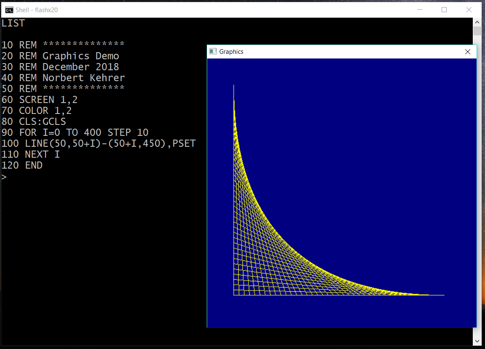
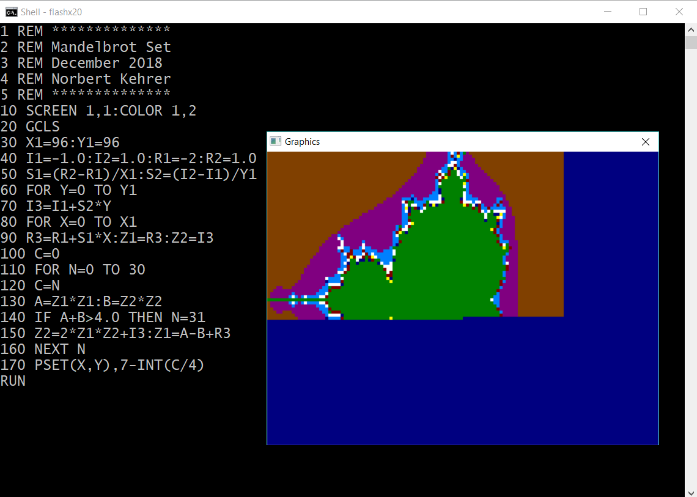
December 15, 2018: Flashx20 — Floppy and Screen for the Epson HX-20
The Epson HX-20 was a nice handheld computer back in the 1980ies. It has a small LCD screen and a micro cassette drive built in, and it offers an interesting way to connect it with peripheral devices. The serial port at the back of the computer can talk to external hardware using an Epson-specific protocol for data exchange.I happen to own an HX-20, and so I wrote the the program "flashx20" (for FLoppy And Screen for the HX-20). With flashx20 a normal Windows PC or notebook computer can be connected to the HX-20, and the PC simulates
- an external display controller, and
- two external dual floppy disk drives (like e.g. the Epson TF-20).
Similarly, it is possible to connect up to four real floppy disk drives to the serial port of the Epson HX-20. There was e.g. Epson's dual disk drive called TF-20, which supported loading and saving of programs and data on floppy disks. When the TF-20 was connected during the boot-up of the HX-20, a special BASIC extension called "Disk BASIC" was loaded into the HX-20 and provided additional commands to work with floppy disks, e.g. the command "FILES" to display the disk directory. For the communication between the external floppy drive and the HX-20 a special protocol was used. Like in the real drives, the flashx20 program on the PC interprets this protocol and stores and loads programs and data from the HX-20 on the PC's hard disk.
I made a zip file containing my "flashx20" program for Windows computers, some BASIC examples to load via the PC, and a pdf manual. You can download it here:
I am still working on a Raspberry Pi version and on the graphics support.Here are some example screenshots:

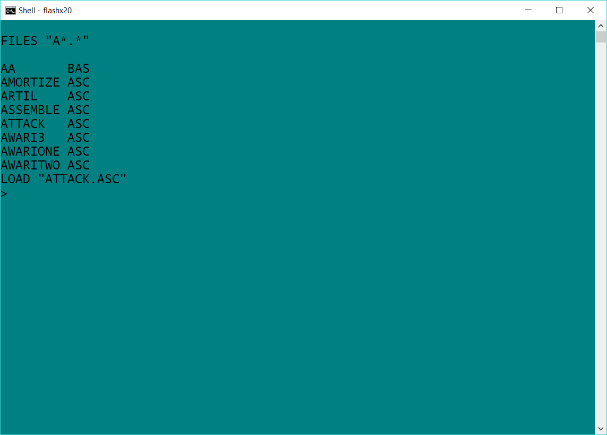


October 20, 2018: Zuse Z22 Emulator in JavaScript
The Z22 was a very early German computer based on vacuum tube technology. It was built by the company Zuse KG in 1958, which sold in total 55 machines to customers mainly in Germany. The machine was used for many applications in science, technology, and business. I wrote a Z22 emulator in Javascript, so you can try this historical computer directly in your web browser here: I wrote (very short) instructions on how to use the emulator. You find them in the "About" tab in the emulator or on Now try out software which was written 60 years ago and make new one!Here are some screenshots of the emulator in action:
September 5, 2018: Radar Rat Race Ported to the Atari 800XL
I made a port of the old and very simple game Radar Rat Race to the Atari 800XL. It was originally written by the company Commodore back in 1982 for the Commodore 64. The game is based on Namco's arcade classic "Rally X", and, even if the game is so primitive, I liked to play it quite often on my C64 back in those days.Similar to my former conversions, the original Commodore program is just running 1:1 on the Atari 800XL computer, which has the same CPU as the C64. The Commodore's graphics and sound effects were replaced by more or less equivalent Atari 800 XL routines. This port was really very easy. Contrary to the C64, the nerve-racking in-game music can be switched on and off in my Atari version by the "Option" key.
The program can be downloaded as an executable file here: rrr.xex
It is also available as an atr file here: rrr.atr
Here are two screenshots of the game on the Atari:
February 25, 2018: Teletext Reader for the Commodore 64 - Downloader for the "Bayerischer Rundfunk" TV station
I added a mass download program for the German TV station "BR" (Bayerischer Rundfunk, Bavarian Broadcasting Service) to my Commodore 64 teletext reader. Just run "teletext_br sd2iec" or "teletext_br 1541u" to retrieve all the BR teletext pages, move them to your SD card, and read them on the C64.The teletext reader with the downloaders for ORF, ZDF, ARD, and BR can be downloaded as a zip file here: teletext.zip.
Below you see some screenshots of BR pages on the Commodore 64:
| 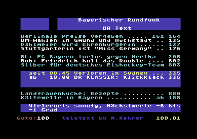 |
 |
 |
 |
February 18, 2018: Teletext Reader for the Commodore 64 - Downloader for the ARD TV Station
I added a mass download program for the German TV station "ARD" to my Commodore 64 teletext reader. Just run "teletext_ard sd2iec" or "teletext_ard 1541u" to retrieve all the ARD teletext pages, move them to your SD card, and read them on the C64.The teletext reader with the downloaders for ORF, ZDF, and ARD can be downloaded as a zip file here: teletext.zip.
Below you see some screenshots of ARD pages on the Commodore 64:
| 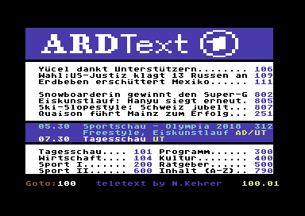 | 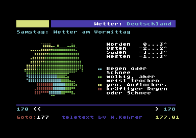 |
 |
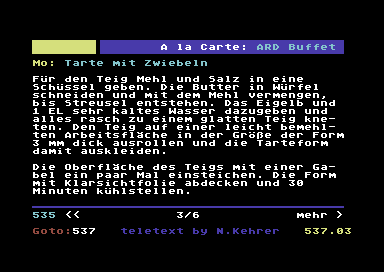 |
 |
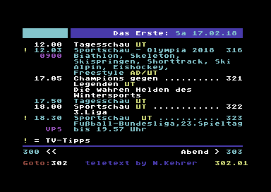 |
February 11, 2018: Teletext Reader for the Commodore 64 - Downloader for the ZDF TV Station
I added a mass download program for the German TV station "ZDF" to my Commodore 64 teletext reader. Just run "teletext_zdf sd2iec" or "teletext_zdf 1541u" to retrieve all the ZDF teletext pages, move them to your SD card, and read them on the C64.The teletext reader with the downloaders for ORF and ZDF can be downloaded as a zip file here: teletext.zip.
Below you see some screenshots of ZDF pages on the Commodore 64:
 |
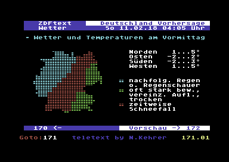 |
| 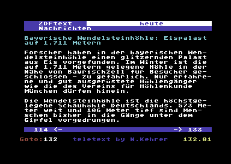 |
 |
| 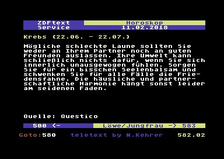 | 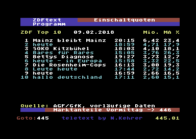 |
February 4, 2018: Teletext Reader for the Commodore 64 - Update of File Naming and Page Format
Thanks again to the feedback and testing of the colleagues at Forum 64. Obviously, the SD2IEC version did not work with the file names with the ".prg" at the end. So, I went back to having only one version of the C64 reader. The program is now called "0teletext.prg", and it should work with the 1541 Ultimate and with SD2IEC (I hope).I adapted the teletext mass download program, though, to have a second parameter to decide if the file naming should be for the 1541 Ultimate (with .prg) or for SD2IEC (without .prg). You can start the page mass download now with the first parameter being "orf1", "orf2", "orfiii", or "orfsportplus", respectively. The second parameter to be passed is now "1541u" or "sd2iec" to control the format of the generated C64 file names.
The updated program can be downloaded as a zip file here: teletext.zip.
If the new version does not work on your machine, I left the old version as a fallback here: teletext_old.zip.
In case, you want to write your own page downloader for you favorite TV station's teletext, here is the format of the pages expected by the C64 reader program. You might also find it interesting to generate text from other sources, of course. I would be happy to hear from your efforts. Please just drop me an email. The format of the files you have to generate is the following:
Position (hex) Contents
-------------------------------------------------------------------------
$0000-$0001 Load address (low byte/high byte). Always has to be
0x00/0x40 (i.e. address $4000).
$0002-$03c1 40 x 24 bytes for the text of the page (ASCII and
special characters).
$03c2 Separator. Always has to be 0x00.
$03c3-$0782 40 x 24 bytes for color and width/height information
for each character of the teletext page. The 8 bits
of each byte are interpreted as "hfffwbbb", with:
h ... Double height indicator (0=normal, 1=double)
fff ... Text color in C64 color code format (0-7)
w ... Double width indicator (0=normal, 1=double)
bbb ... Background color in C64 color code format (0-7)
-------------------------------------------------------------------------
January 29, 2018: Teletext Reader for the Commodore 64 - now with Mass Downloader for All ORF Channels
Thanks to the great feedback and testing of the colleagues at Forum 64 I could fix some bugs and make my teletext reader usable for SD2IEC and also for 1541 Ultimate. The version for SD2IEC is called "0teletext.prg" now, and the one working with a 1541 Ultimate is called "0teletextu.prg".I also extended my teletext mass download program to be able to download also the teletext pages of the ORF channels ORF 2, ORF iii, and ORF Sport +. You have to start the page download now with "teletext_orf orf1", "teletext_orf orf2", "teletext_orf orfiii", or "teletext_orf orfsportplus", respectively.
The updated program can be downloaded as a zip file here: teletext.zip.
Below you see some screenshots from the newly added channels:
 |
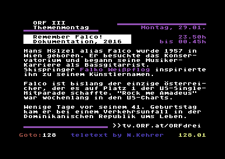 |
| 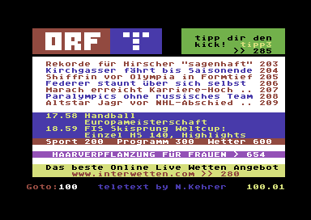 |
 |
January 28, 2018: Teletext Reader for the Commodore 64
At a Commodore meeting in Vienna a visitor said, that it would be nice to read teletext pages on a Commodore 64. I thought so too, and wrote a teletext reader, but probably based on a different concept, than originally imagined by that C64 fan. Teletext is made up of (almost pure) text pages with 24 lines and 40 columns, and it is broadcast by many TV stations via the television signal in the so-called vertical blanking interval lines. The contents offered in these pages are mainly news, weather, TV schedules, etc.To read the teletext pages on a Commodore 64 you would have to build some hardware to extract the data from the TV signal and feed it into the C64. This would also be a really interesting Retro project in itself, but for my simple reader I used an alternative method. Many TV stations offer their teletext contents also on their web sites for reading them in the browser. So, I wrote a C program to download all the teletext pages of a specific TV station (at the moment only the Austrian Broadcasting Corporation, ORF) to your Windows PC and convert them into files readable by my C64 teletext reader program. Each teletext page will then become one file for the C64. You can then copy all these files and the reader program to an SD card and take your time to read them on the Commodore. The pages are identified by 3-digit numbers, which you can enter in the C64 reader and select the page with the "Return" key. The function keys offer some simple navigation functions, like going back to the last page, etc.
I have to admit, that I have no SD card interface for my Commodore 64, so I could only test it in the emulator. I am hoping for your feedback, if this really works on real hardware. Please send me an email. At the moment, I have only a downloader for the ORF, but the next step would be to add more TV stations, e.g., the German ARD and ZDF teletext offerings.
The program can be downloaded as a zip file here: teletext.zip.
The archive contains a Windows program you just run on the Windows command line. It will then download and convert all the "ORF eins" teletext pages to a C64 readable format and store them as files (more than 4,000!) in a directory called "pages". This takes about 5 to 10 minutes. Then the teletext reader program for the Commodore 64 is copied to this "pages" directory also, and you are ready to take this whole directory over to your Commodore 64, e.g. on an SD card.
Below you see some screenshots of the result:
| 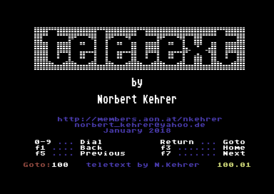 |

|
 |

|
 |

|
| 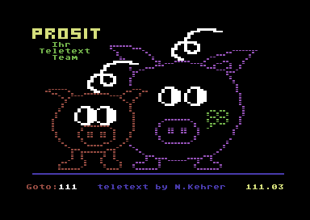 |

|
August 31, 2017: Floating Point Library for the Mailuefterl Computer and More Original Mailuefterl Programs
Almost all original software for the Austrian pioneering computer Mailuefterl seems to be lost now. This is really a pity. I found some pieces of original Mailuefterl code in the diploma thesis of the late Peter Lucas, one of the members of the Mailuefterl team. Peter wrote about computer programming, which was a completely new field of knowledge back in 1959. He shows structured ways of programming using several instructive examples like a sine function implemented via Taylor series, or square root calculation with Newton's method, or matrix multiplication, etc. In the appendix of his diploma thesis Peter Lucas added the code listings of these examples in Mailuefterl assembly language. Unfortunately, the programs use a floating point library, which was also written by Peter Lucas as part of his diploma thesis, but for which the code listing was not included. So, in order to be able to run Peter's example programs in my Mailuefterl emulator, I had to rewrite the floating point operations from scratch on my own. I implemented addition, subtraction, multiplication, division, and printing of floating point numbers. My code is certainly not as elegant as Peter's original, but it seems to work, and so Peter Lucas' original programs from 1959 can be tried out still today. I also could find and correct some bugs in my emulator during this interesting exercise.You can try Peter's programs and my floating point routines directly in your internet browser here:
The exact reference of the diploma thesis (in German) is:Lucas P.: "Zur Programmierung elektronischer Rechenmaschinen", Staatspruefungsarbeit am Institut fuer Nachrichtentechnik II der Technischen Hochschule Wien, Vienna, October 1959.
The title translates to "On the programming of electronic calculating machines".
Here is a screenshot with a little demo program using Peter's sine function:
July 10, 2017: Mailuefterl Emulator in JavaScript
The Mailuefterl (German for "may breeze", an allusion to much bigger US computers like "Whirlwind" or "Typhoon") was the first fully transistorized computer in Europe. It was built at the Technical University of Vienna (Austria) from 1955 to 1958 by Dr. Heinz Zemanek and his team. In 2007 I wrote an emulator for this pioneering machine as a Java applet, which does not work any more on modern browsers. So, ten years later, it was really high time for a port to JavaScript. You can now again try this historical computer directly in your internet browser here: I also wrote short instructions on how to use the emulator, and I summarized the complete instruction set of the machine on Go there to read more and to try out software which was written in the 1950ies and probably has not been run for almost 60 years now!Here are some screenshots of the emulator in action: